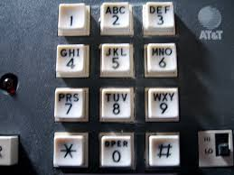

Copyright © Cay S. Horstmann 2014 
This work is licensed under a Creative Commons Attribution 4.0 International License
val triple = (x: Int) => 3 * x
triple is Int => Inttriple to another function/method:
1.to(10).map(triple) // yields 3 6 9 12 ... 30
map is a higher-order function—it consumes a functionfilter. It consumes a function T => Boolean
1.to(10).filter((x: Int) => x % 2 == 0) // yields 2 4 6 8 10
val triple = (x : Int) => 3 * x
Int => Int1.to(10).map((x) => 3 * x)
1.to(10) is a Seq[Int], the type of x is inferred to be Int()
1.to(10).map(x => 3 * x)
x occurs exactly once, can drop x => and use _:
1.to(10).map(3 * _)
reduces.reduce(f) computes f(...f(f(s(0), s(1)), s(2))..., s(n-1))f is a function with two arguments1.to(100).reduce(_ + _) is 1 + 2 + 3 + 4 + ... + 100 = 5050s.reduce((a, b) => if (a > b) a else b) computes the maximum1.to(100).map(_.toString).reduce(_ + _)
"5050""1 2 3 ... 98 99 100"flatMaps, easy to form all pairs (x, 0):
s.map(x => (x, 0))
// Vector((1, 0), (2, 0), (3, 0), (4, 0))
map twice:
s.map(y => s.map(x => (x, y))) // Vector(Vector((1,1), (2,1), (3,1), (4,1)), // Vector((1,2), (2,2), (3,2), (4,2)), // Vector((1,3), (2,3), (3,3), (4,3)), // Vector((1,4), (2,4), (3,4), (4,4)))
flatMap instead:
s.flatMap(y => s.map(x => (x, y))) // Vector((1, 1), (1, 2), (1, 3), (1, 4), (2, 1), (2, 2), ..., (4, 4))
val n = 3 val fun = (x : Int) => n * x // What is fun(2)?
n is not defined in the scope of fun, but that is ok. In the body of a function, you can use any variable from the enclosing scope.n is immutable, so it will always be 3. But consider this:
def mulBy(n : Int) = (x : Int) => n * x
val quadruple = mulBy(4) // the function (x : Int) => 4 * x
quadruple(5) // yields 20
mulBy yields a different function.nreduce slideflatMap slide
Day3. Type in
val zones = java.util.TimeZone.getAvailableIDs. What do you get?
zones.map(s => s.split("/"))
a(1). What did you do? What happens?grouped(10))1.to(10).reduce(_ * _)What do you get?
n copies of the number 2? Hint: map.Seq[String], how can you use reduce to concatenate them with spaces in between? Write a function catSpace that does this. For example, catSpace(Vector("Mary", "had", "a", "lamb")) should give a string "Mary had a lamb"1.to(10).reduce(_ < _)? Why?flatMap and reduce
Martin Odersky, the inventor of Scala (as well as the charming husband of one of your instructors) likes to show off the power of Scala with a solution of the “phone mnemonics” problem. Given a phone number, what word or word sequence spells it on a touch-tone pad? For example, given the phone number 435 569 6753, one should come up with the sequence HELLO WORLD (and maybe others).
We can do better than what he did in his presentations. Over the next three labs, we'll solve this problem with our very restricted subset of Scala.
'2' to "ABC", '3' to "DEF", and so on. How do you do that? Pay attention that the keys should be characters and the values should be strings.Vector with three elements, "A", "B", "C". But we don't want to type all that by hand. Transform your map by adding
.map(e => (e._1, e._2.map(c => c.toString)))Call the result
letters—we'll need it in the next step.
letters(d). Let's move on to two digits. Write a function that given two digits produces the set of all words (whether or not they make sense) that you can make with both.
val wordsFor = (a: Char, b: Char) => ...For example,
wordsFor('5', '9') contains "JW", "JX", "JY", "KW", "KX", "KY", "LW", "LX", "LY". Hint: flatMap